来源：https://iq64gi1kezp.feishu.cn/docx/Ma6edEGDzokPr4xhCFmcNrA1nlY
各位圈友，大家好，我是天豪。
目前深耕于「同城直播发售」希望为中国的线下实体商家提供真正有效的引流转化及赋能服务.
我从2020年进入房地产开发商营销板块,到后来因为想要充分了解线下实体商家的痛点需求而进入了本地生活服务行业,一直以来都是在商务及营销摸爬滚打,熟悉我的朋友知道我身上带着「销冠」的标签.
在上一篇帖子中，我复盘了自己从项目最前端的商务岗位，到销转岗位的升级转型。
而这一期航海项目，我又经历了身份的进一步转变：
选择东莞，不仅仅是因为这是我定居的城市，更是因为这里是一个典型的新一线城市，有密集的消费人群和大量中小商户——正是我们项目最合适的土壤。
我们用了近一个月的时间，与近20位圈友老师一起，拉起了打爆“同城发售”在广东市场的旗帜。
最终，我们东莞团队在航海期成交商家70家，完成交付商家50+家，创造了非常可观的团队收入和个人收入。
这1个月里,我用了一半的时间交付服务了4家机构,这四家机构给我个人带来了4万+的真实收入.
本篇帖子我主要会通过以下几点跟大家分享交流：
1、航海介绍及项目最新的分析
2、实体操盘手的工作内容及收获
3、真实案例拆解：一次“教培引流+转化”的完整流程
4、 选择深耕「同城发售项目」的未来之路
5、 在生财第二年我的个人心得
在信息泛滥、线上竞争白热化的当下，线下实体商家却普遍陷入流量困境。他们被抖音、快手、小红书等平台的“算法焦虑”逼得疲惫不堪，却始终找不到真正适合自己的引流方式。
而“同城直播发售”，让我看到了线下市场的可能性。
这个项目有三个我认为最重要的特质：
所以我选择加入。不是为了风口，也不是因为情怀，是因为它解决了一个真实问题。
2025年4月中国零售业景气指数（CRPI）为50.5%，维持在扩张区间。其中，租赁经营类指数显著回升至52.7%，商品经营类指数重回扩张区间（50.1%）
这些数据意味着什么？意味着市场在复苏，尤其是线下服务类商家，在重新寻找增长方式。
我们接触的客户涵盖：
这些商家大多数有强产品力，但严重缺乏线上引流能力。
如果你是以上行业的实体商家,那你一定遇到过以下这些问题:
教育行业
体验行业
健身房：
婚纱摄影：
礼服租赁：
...
更重要的是，他们的核心需求不是一次性买量，而是建立自己的转化链路——能引流、能沉淀、能复购、能复利。
这，就是我们项目存在的意义：不是简单变现，而是真正帮助实体商家建立完整的获客系统。
这也正是我们项目存在的意义:
帮助一部分同城实体,真的有利润
很多人以为操盘手就是执行，其实远不止如此。
在实际工作中，我们一般将商家分为两类：
这些类目的客户可以反复购买，我们的交付策略是：
这类商家追求的是一次性成交的精准客户，所以我们采用：
在整个交付过程中，我们不是“外包执行团队”，而是教商家学会引流与变现的方法，让他们在我们退出后，依然能独立运转。
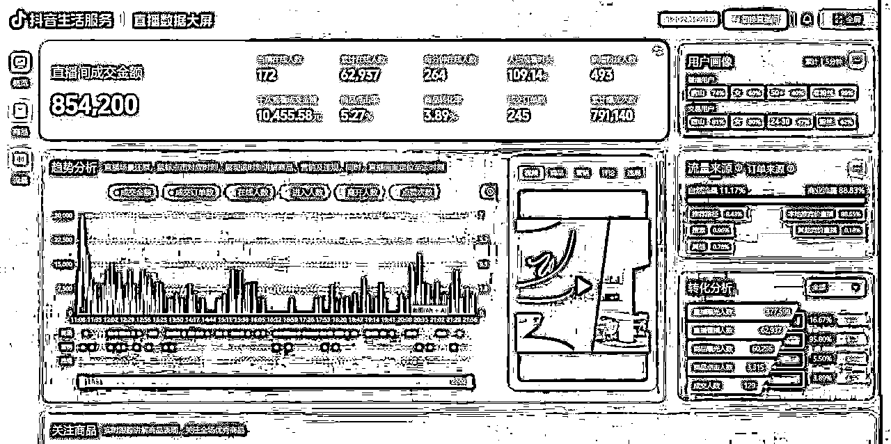
首选咱们要明白一点: 之前教培行业熵减政策这一重拳是打在了文化课补习机构上,但随之而来的是艺术培训类目的遍地开花,诸如书法美术、 运动球类体适能、 AI编程机器人、 声乐乐器、 口才小主持等等.
用我们其中一位船员的话来说: 在没做这个项目之前都没发现,原来街道上面有这么多的少儿艺培机构.
就拿东莞这一座新一线城市来说,教培艺培机构的数量就达到了6000+家.
我们接触的是一家位于东莞的少儿篮球培训机构。机构面积不大，位于一个经济水平中游的镇上，老板非常有教育情怀，但完全不懂线上引流。
教培艺培机构一般所需要的客户,基本上都是机构为中心周边3公里范围内的用户,并且这些客户基本上就是这3公里范围内的幼儿园、 小初高的学生家长,彼此之间都有联系. 因此,微信视频号这一天然具有社交关系属性的平台就要比抖音要更好一些,原因在于,我机构内在读的学生,他妈妈推荐他另一位同学家长过来,成交概率自然会更高.视频号无需跨平台跳转,这一点就有利于我们在宣传上穿透一个又一个朋友圈关系网.
既然我们确定了要用微信视频号进行直播曝光引流,我们就要把影响直播间数据的基础做好,例如预约直播人数、 到播率、 用户画像标签能否快速清晰化等等,所以我们在直播之前我们会进行「社群裂变+预约直播」.
我们会将教培机构原本在校的学生资源进行筛选,挑选出35位粘性最高的学生家长进行微信群的一键成群(因为这个人数不需要经过同意可以直接成群),随后通过邀约激励的机制,以红包和礼品相结合的方式让群内用户进行一轮裂变.
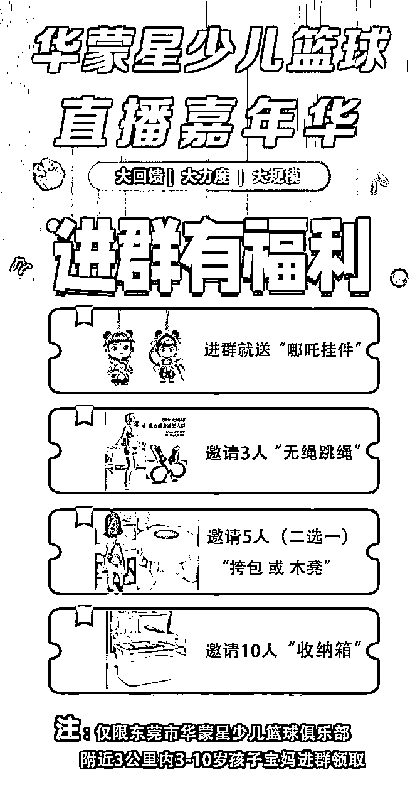
在这个环节,我们已经帮校区收获了一批潜在客户的新客资.
而接下来,我们会让这2天时间内已经被活动调动起积极性的新老用户一起来预约我们所服务的机构的直播间,构成我们前面所提到的直播间的基础人数,让我们的直播间在开播之时拉开和普通直播间的差距.
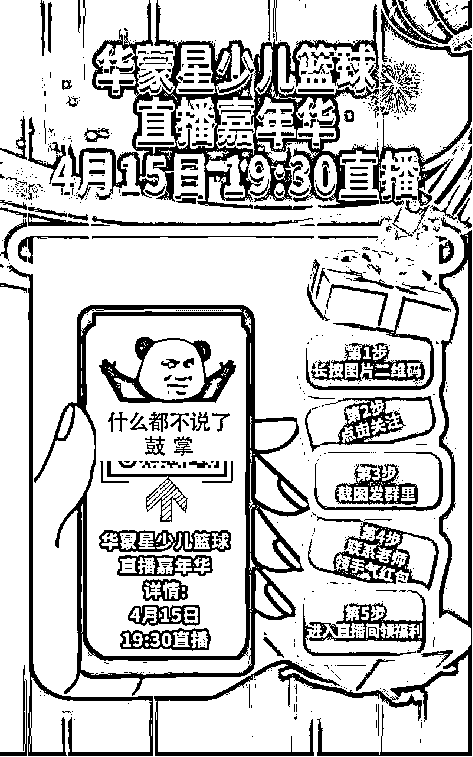
同时这一批预约了直播间的观众也会给我带了一个非常重要的作用,就是她们身上自带用户画像,例如IP在广东东莞道滘镇的,孩子正处在3-12岁为主的,80后90后宝妈,平时也会刷一些关于孩子学习相关的视频.这使得我们的直播间用户画像标签能够更加快速地清晰化,精准地撬动同城的流量.
而在直播期间,我们也会通过引导分享直播间送好礼、 每10分钟一轮的福袋抽奖等方式来拉直播间的停留,从而让平台给我们带来更多的同城新用户,针对这些用户我们会进行引导私信以及展示联系方式引导截图的方式,从而引流到校区机构的私域进行成交.
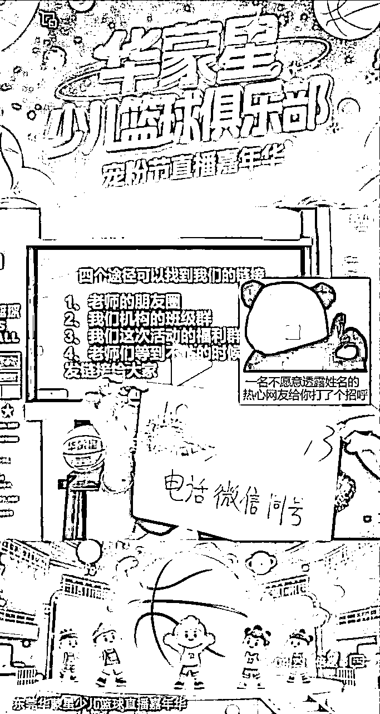
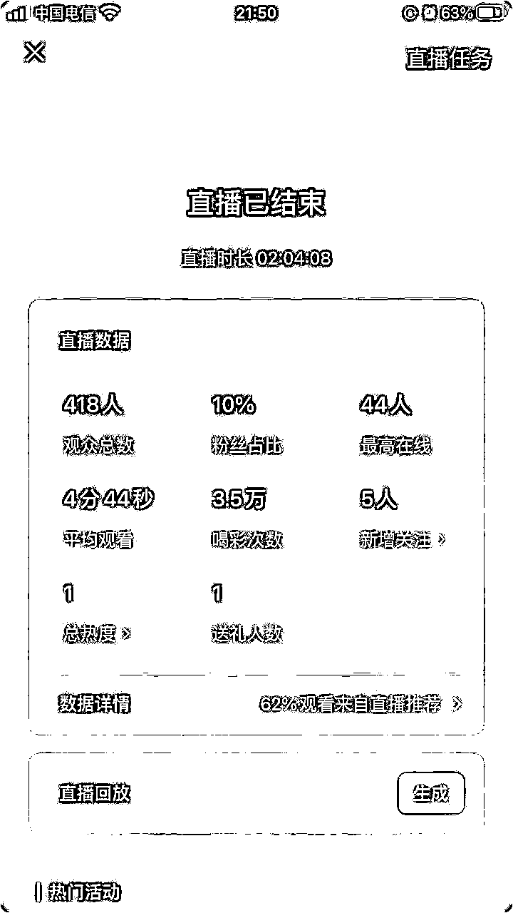
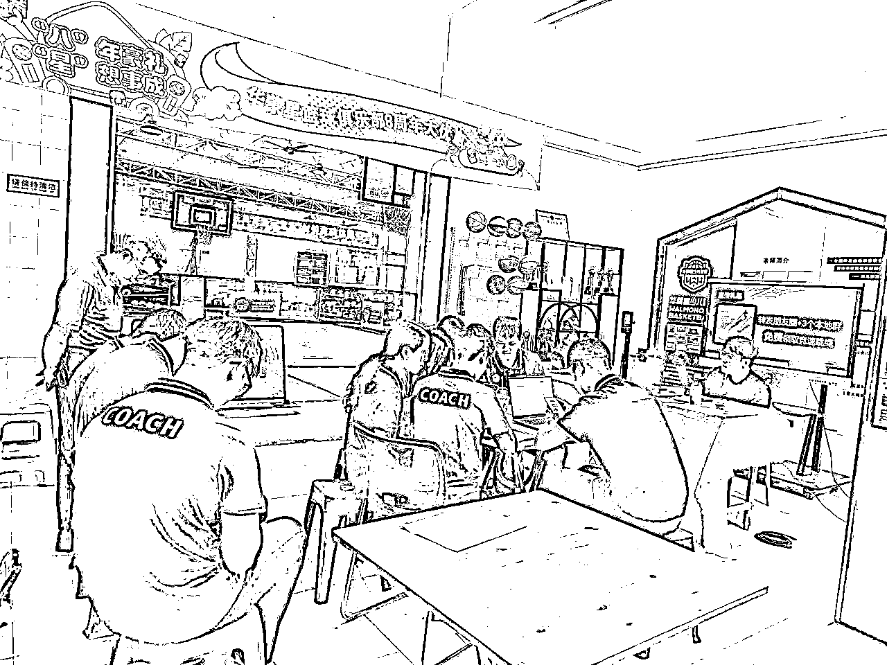
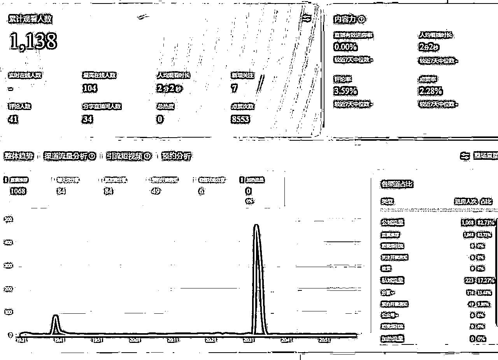
直播能够给机构带来以往所没有的大的曝光,有新的客资,同时还大大提高了机构学生家长参加活动的积极性,大幅度减少了校区老师与家长之间的沟通繁琐程度.
而产生了购买之后的首批客户,我们会通过拼团裂变的方式,让他们进一步去带来更多的新用户报名,这一动作主要是发生在私域,过程中需要操盘手老师在机构现场以交付SOP流程以及自身的控场能力,促使校区老师们进行全流程的配合,积极与报名的家长进行沟通,引导裂变.
以图片中展示的东莞的这家少儿篮球机构为例,在直播结束的当晚,报名量仅仅是30+单,新生和老生的比例在1:1
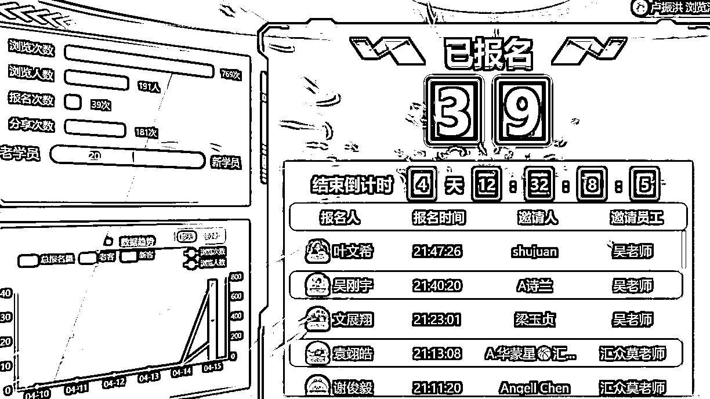
这个机构本身的在校学生人数在100人左右,按理来说报名量达到50%及以上才算正常
而经过我在校区进行为期2天的操盘把控,针对不同成团人数的家长进行针对性的沟通调整动作后,数据就产生了变化.
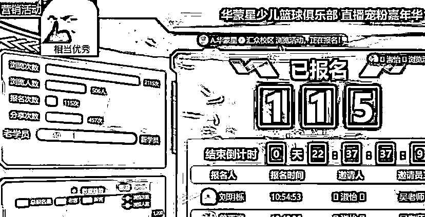
在这期间,我们会根据后台报名的名单,给所有新报名的客户准备好专属于她的分享裂变海报以及分享文案,助于客户无脑分享.
同时针对单独报名的家长进行针对性的电话沟通,针对2人团、 3人团也会有针对性地沟通引导其充分发挥自身资源,尤其是推荐资源比较多的家长更加需要重点沟通.
最终这家机构的满意度也很高,在第一家校区还未完全结束的时候就现场确定了让我帮他另外一个校区也做一场活动.
引流客户对一个商家来讲固然重要,
但更重要更核心的其实是转化,因为大部分做引流的产品,价格相对而言都比较低,
所以邀约到店进行低转高,转化为高客单的环节就属于非常重要的一环.
咱们以少儿艺培 书法美术类目的一家机构为例,我们针对这些购买了引流课包的客户会进行无体验转化
即在学生到机构上体验课之前,就通过专业的话术邀约,以到店参加活动领取礼品以及参与免费测评为由进行邀约,选择一个家长们都有空的周末进行活动.
活动现场设置好签到区、 测评区、 谈单区、 礼品区等不同功能区域,针对校区老师的专业程度、 沟通能力的水平不同进行不同区域的人员配置,指导校区完成整个活动动线的搭建,用环境气氛营销来实现没体验即报课的效果.
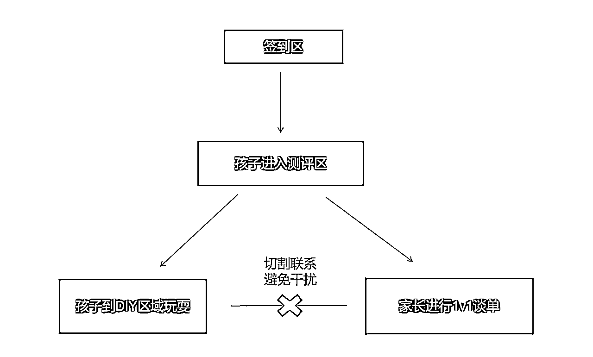
转化率基本上都能够达到30%及以上的到店转化率!结合校区后期课中以及结课后普遍30%左右的转化率,一场活动的整体转化率能够达到60%以及更高的水平!
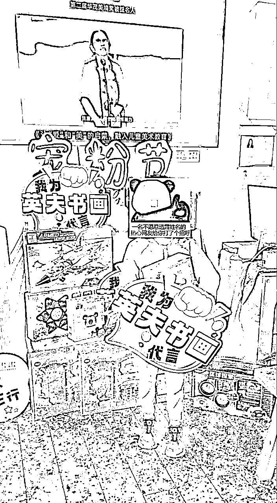
测评区 礼品区
仅从操盘交付的角度进行核算,在这一个月时间里,我在兼顾团队陪跑的同时,抽出时间交付了四家机构,这四家机构包括了少儿美术书法、 声乐乐器、 少儿篮球以及一家青少年宫综合体.平均单家机构交付的时间在3天左右,总计给我带来了4万多的个人收益,同时也成功为团队在东莞市场开展业务打下了案例.
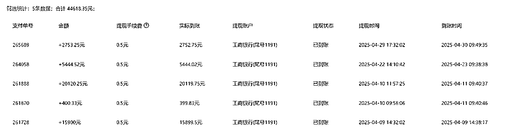
每家机构的学生体量不同,最终产出的效果也会有差异,但对于一个同城实体操盘手来说,我所呈现出的收益实际上还能够去到更高的水平.原因在于因为兼顾团队的原因,我实际上并没有完全把时间放在交付上,如果我全身心投入在交付上,交付的订单数量起码能够再翻一番.
另外这次我只交付了少儿艺培板块,而操盘手实际上我们上面提到的各种类目,只要经过系统性的培训和实战,我们都是能够去交付的,这意味着我们的收益实际上还有很大的提升空间.
同时我们现在在前端获客上采用抖音中心化投流打客资的方式,每天都会进线大量的新客资由前端销转进行转化,所以给到操盘手老师的订单实际上属于是一个定数,不用担心没有订单可交付的问题.
看过我之前帖子的朋友会知道,前端不论是商务还是销转,主要提升的能力是围绕沟通谈判、 逻辑思维、 自信心等方面.而经历操盘手的工作内容后我们会发现提升的能力又是新的方面,我总结为以下几个方面:
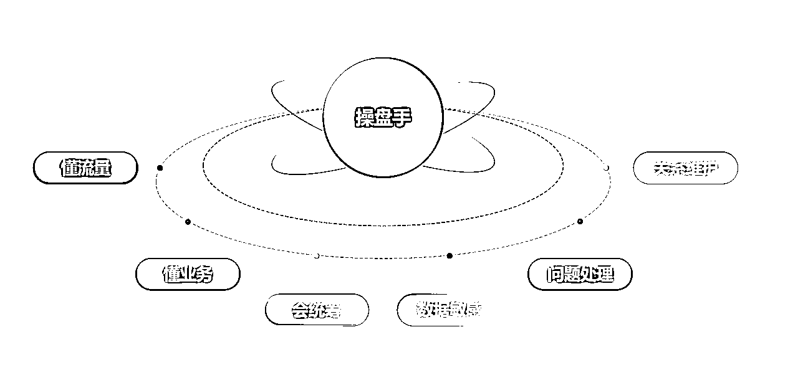
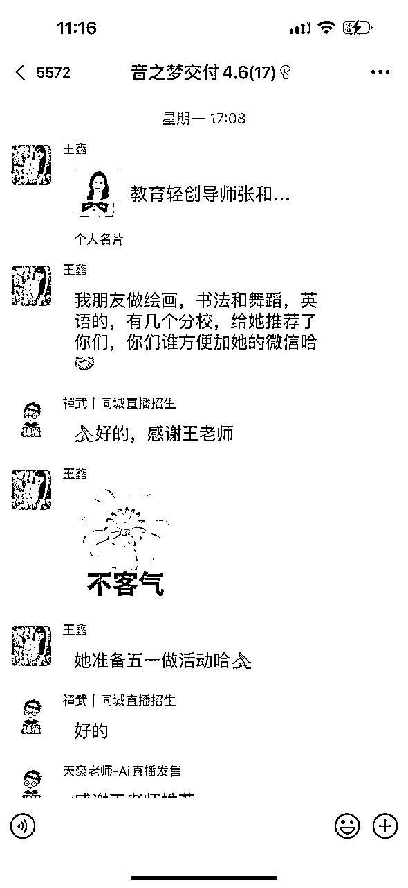
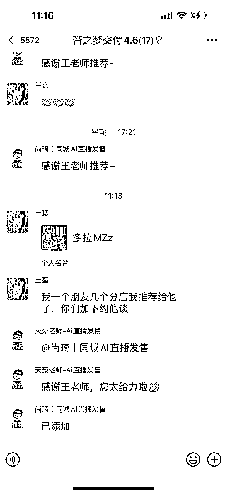
那话说回来,一个月前我的工作内容还是前端商务切换到客资销转部门
这一个月我做交付为什么能够快速上手并拿到满意的结果呢?
原因在于我做了以下这几点:
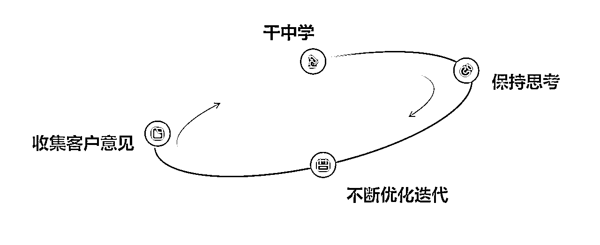
但同时还有一类人是,希望有一个标准的参考,同时每一步都被安排的明明白白,不然就会失去方向,无从下手.
最近亦仁老师发了一篇帖我觉得说的就是这个点:
很多人其实不是能力不够，而是思维方式卡在了“做题家模式”里。
什么意思呢？
就是他们特别希望事情是有标准答案的——
信息是结构化的，项目是明确的，路径是清晰的，最好还有一个非常权威的老师来带，告诉你：第一 步怎么做，第二步怎么做，最后能保证“做对”。
很多人对航海的期待就是这样，一步一步教，最好画出示意图。
他们最舒服的状态是：
有一本教材，有一个模板，有一个答案——照着抄，稳稳地做，不出错。
我认为最好的方式就是干中学,以这次操盘交付老师为例,在开始前我实际上也只是跟着之前的带教老师跑过一遍
流程,但是不同的点在于,我会充分地把整个方案框架理解消化,然后我和孙策老师说的就是:剩下的我在实践中摸
索.
在每一次交付过程中我都极其珍视我每一个动作让商家机构执行后带来的效果,明白SOP每个动作设计背后的意
义,真正理解我们的交付方案,这样才能形成自己的见解,而非一个套用公式的人.
这个只是其中一个细节,每一位优秀的交付老师都是在不断思考总结,从而反推调整属于自己的SOP流程.
例如当年还在金山的雷军,在刚开始研发出金山的软件后发现销量不佳后,直接亲自下到当年那些卖光碟的电脑
店,跟着销售人员一起售卖软件光碟,从中发现了操作繁琐,没有清晰的安装指引的问题,立马进行了调整优化.
所以当客户在交付过程中提出我们的操作流程效率低,给老师们造成的工作量比较大时,我们都应该记录下来,看
是否能够通过AI+RPA的方式进行工作流上面的优化,这一套工作流一旦测试成功,实际上也是一个有着不错市场
的产品.
相较于半年前的模式,我们的工作架构上面进行了新一轮的迭代升级.
目前我们的客资来源主要来源于抖音的投流获取, 统一中心化投放,再由销转部门进行新客资的转化,
客户在销转同事手上成交后, 订单会派发给全国各地我们的操盘交付老师.
但交付老师可以做的类目广度是非常OK的,包括但不仅限于我们上面提到的教培艺培、 婚纱摄影、 餐饮、 美
业、 健身房、 瑜伽普拉提等等
同时操盘交付老师公司会指导辅助进行个人IP账号的搭建,因为在交付老师交付的过程当中,其实我们会收集到大
量的新素材,再通过扒爆款二创的方式,给账号提供内容,这件事情就变得非常有意思了.
交付老师可以选择全职投入,也可以选择副业兼职, 例如你在广东广州,我们这边有广州的订单需要交付,而你恰好有
时间,这个单子就可以给你在三天左右的时间里面带来一笔非常可观的收入.
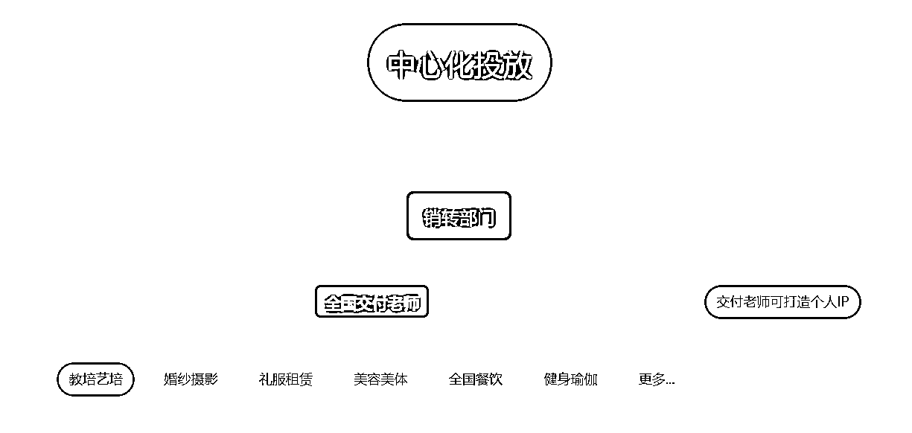
所以这个项目所能够覆盖到的市场是非常大的,而作为一个操盘手老师,未来你会精通熟悉各行各业的经验生态,并且你会成为一位他们在流量获客上的专家,引用涛哥的话来说,这件事是能够穿越时间周期的,是一个长线事业,而并非你随手尝试的众多项目之一,但如果你愿意和我们一起深耕,这个项目也一定不会让你失望.
写下这篇帖子恰逢4.18过去不久,我也刚刚完成了生财的续费
进入生财有术,让我相信了真的存在有改变一个人人生的社群生态
在这里我也跟大家分享一下我在生财有术一年的历程,
我这一年参加过视频号口播带货航海,Web3航海,同城发售航海,我也有过迷茫的时期,刚从房地产出来时,
感觉自己跟互联网是脱轨的,传统的营销方式仿佛派不上用场.
直到我在众多帖子以及航海项目中发现了孙策老师的「同城直播发售」项目,
至此我屏蔽了其他项目信息,因为在我充分分析市场后我坚定地认为同城直播发售的市场大有可为,
我为了让自己对同城实体、 本地生活的了解更加清晰完善,我入职了广东本地头部的一家本地生活公司
在近一年的时间内我得到了我想要的讯息,并在去年10月新一期同城发售航海时期辞职加入了项目.
因为正值4.18更过去不久,也许有很多和我当时一样新进入生财有术的圈友,在这里我想以自身经历告诉大家的是:
1、 多看看航海项目以及航海手册,看是否合适自己
2、 确定好自己喜欢的项目就大胆尝试去做,一边看这个项目的各种精华帖一边坚定地去实践
3、 追求一个项目的深耕深度而非尝试过的项目数量,跑通才能放大
最后感谢阅读到这里,由衷地感谢生财有术,感谢同城直播发售项目,感谢孙策老师.
如果你也是一个愿意脚踏实地、愿意从0-1学习、愿意为结果负责的人，欢迎加入我们。
祝你也能在喧嚣世界中，找到属于自己的价值感与掌控力。
我们，江湖再见！
——天豪
祝大家都生财有术,八方来财~